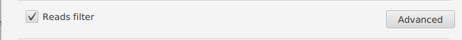
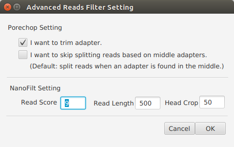

Reads Filter Einstellung¶
 Porechop Einstellung [1] (Optional)¶
Die Optionen für Porechop einzustellen.
Bemerkung
- „I want to trim adapter“ auszuwählen, wenn Sie Porechop verwenden möchten, um die Adapter der Sequenzen zu trimmen. Standardwert: ausgewählt.
- „I want to skip splitting reads based on middle adapters“ auszuwählen, wenn Sie keine Sequenz, die sich in der Mitte einen Adapter befindet, teilen möchten. Standardwert: nicht ausgewählt.
Read Score(Read Score) [2] (Erfordlich)¶
Einer durchschnittlichen Mindestwert für die Readqualität einzugeben, um die Reads zu filtern.
Bemerkung
- Standardwert: 9.
Readlänge(Read Length) [2] (Erfordlich)¶
Eine minimale Readlänge einzugeben, um die Reads zu filtern.
Bemerkung
- Standardwert: 500.
Kopf trimmen(Head Crop) [2] (Erfordlich)¶
Anzahl der Nukleotide, die ab dem Beginn des Reads geschnitten werden sollen, einzugeben.
Bemerkung
- Standardwert: 50.
| [1] | Porechop https://github.com/rrwick/Porechop |
| [2] | (1, 2) NanoFilt https://github.com/wdecoster/nanofilt |